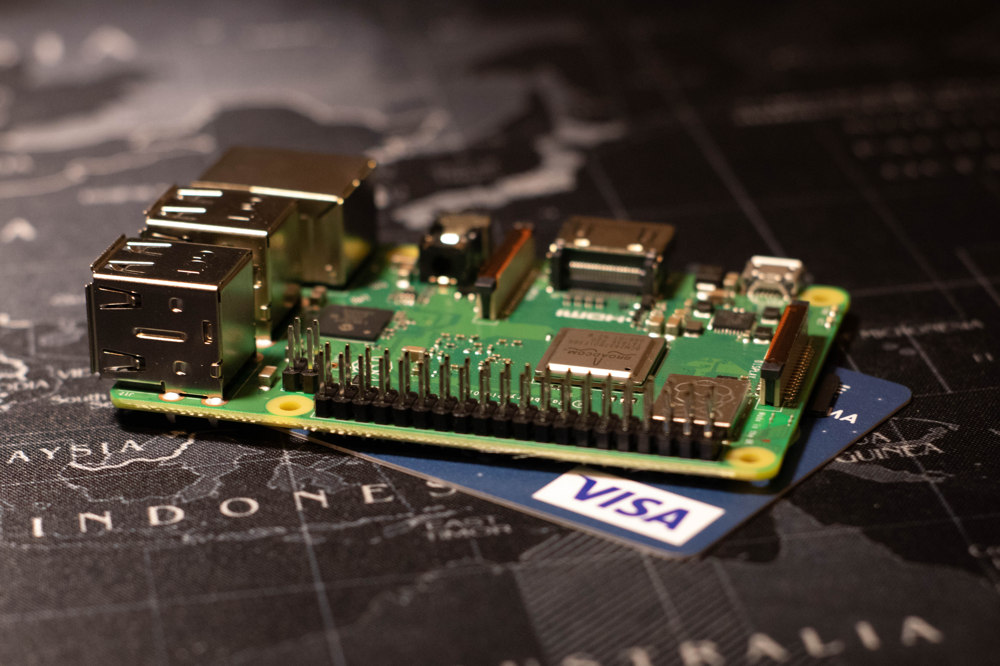
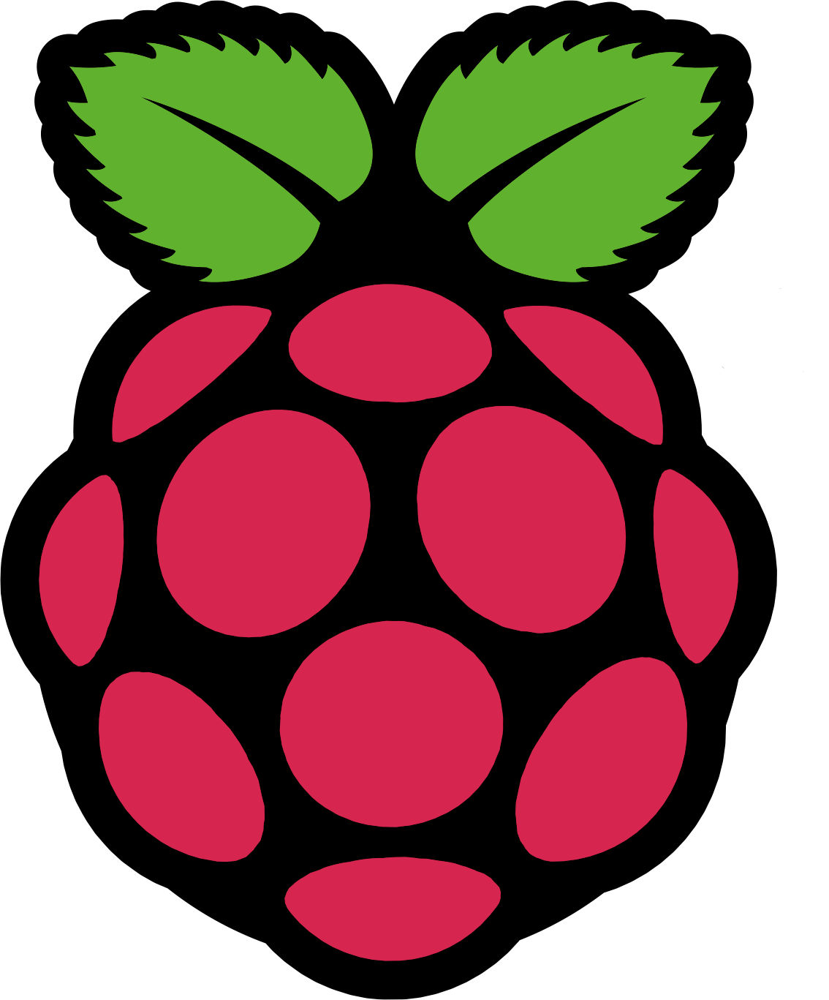
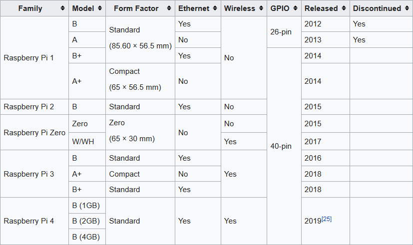
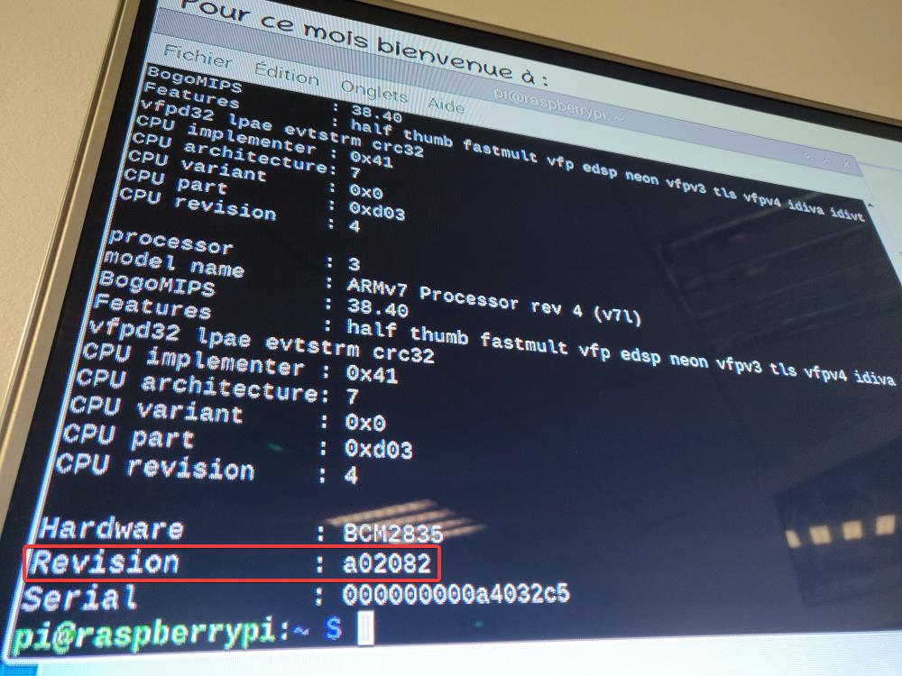
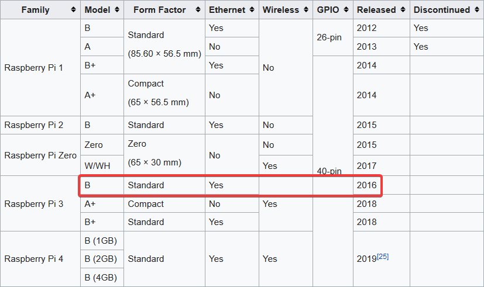
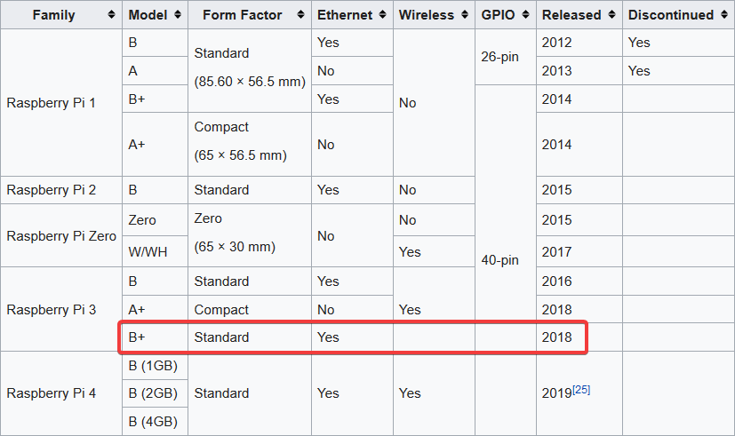
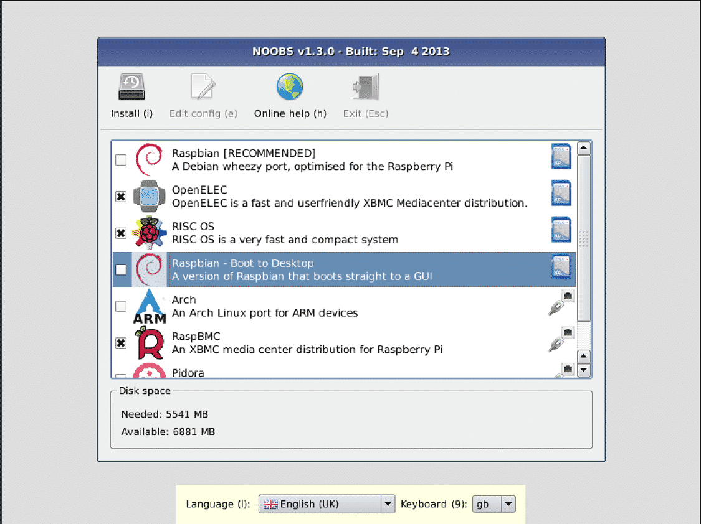

(Re)Découverte du Raspberry Pi
Présentation brève en une ou deux phrase.
C'est mon premier 12@13.
Contenu
Présentation générale
Démonstration
Pourquoi l'utiliser ?
Pourquoi ne pas l'utiliser ?
Conclusion
The Raspberry Pi is a low cost, credit-card sized computer that plugs into a computer monitor or TV,
and uses a standard keyboard and mouse. It is a capable little device that enables people of all ages
to explore computing, and to learn how to program in languages like Scratch and Python.

Créé en 2012
19M d'unités vendues (2018)
🏭 → Chine, Pays de Galles et Japan
⚠️ Rpi ≠ Arduino !
Le premier modèle → Model A

Le Rpi est créé en 2012 aux royaumes unis par la fondation Raspberry Pi qui est une association caritative fondée
en 2009 pour encourager l'aprentissage des bases de la programmation dans les écoles partout dans le monde (mais pas que, on verra ça plutard dans la préz).
En 2018, c'est pas moins de 19M d'unités vendues dans le monde. En 2015, il est classé meilleur oridnateur britanique en terme de vente (mieux que les Amstrad !)
Au tout début, les rpi étaient fabriqués en Chine. Après un certain temps, Sony a commencé à en fabriquer dans certaines usine au Pays de Galle et au Japon.
La qualité du produit final est la même peu importe l'usine dans lequel il est fabriqué.
Attention, il ne faut pas confondre le Rpi qui est un nano-ordinateur (ou ordinateur mono carte) avec l'Arduino qui est un microcontrôleur (pas de ports vidéo, ...)
Pourquoi "Raspberry Pi" ?
"Raspberry" → comme Apple 🍏, Tangerine Computers 🍊, Apricot Computers..."Pi" → Python Interpreter 🐍

(A, A+, B, B+ sont des mise à jours incrémentales)

Sortie de la commande cat /proc/cpuinfo sur le Rpi à l'accueil (Agence Rennes)
Sortie de la commande executé sur la Rpi connecté à l'écran d'accueil (sur lequel est hebergé l'appli welcome)
La ligne "revision" permet d'identifier le modèle du Rpi.
En googlant ce code, on trouve le modèle qui lui est associé.

Modèle du Rpi à l'accueil

Modèle du Rpi de démo.
SoC : CPU Quad-core ARM + GPU + 1 GO DDR3 RAM
Ethernet: Gigabit Ethernet + PoE
Dual-band 802.11ac wireless LAN + Bluetooth 4.2
4 x USB 2.0
Micro SD Card Slot
GPIO 40 pins
Audio/Video composite
HDMI Port
Power: 5V/2.5A DC power input
un SoC (System on a Chip) de la marque Broadcom
Ajout d'un dissipateur thermique ajouté par rapport à la version précédente qui permet une meilleure aération
PoE (Power Over Ethernet) qui permet d'alimenter le Rpi grâce au câble ethernet (avec un module supplémentaire à brancher aux 4 pins isolés).
Wifi dual band (2.4GHz and 5GHz )
Wifi + Ethernet jusqu'à 4 fois plus rapide que le modèle précedent.
Lecteur de carte SD : qui fait office de ROM (investir dans une bonne carte pour éviter les mauvaises surprises).
GPIO qui permettent la connexion de cartes d'extension
OS compatibles
Raspbian (= Raspberry + Debian) 🌟
RISC OS
RaspBSD
Ubuntu Core
Windows 10 IoT Core
...
Raspbian (= Raspberry + Debian)
Pas mal de distro dédiées comme la recallbox qui pour la transformer en console de jeux, des distos de media center, etc.
Je vous recommande pas Windows 10 IoT, il souffre d'une lenteur extrême d'après des REX !
NOOBS (New Out Of the Box Software)

L'outil facilite grandement l'installation d'un SE pour les débutants
Il suffit de télécharger l'archive, la décompresser et copier les fichiers sur la carte SD
Hotspot Wi-Fi
Mise en place d'un hotspot wifi gérable de façon indépendante de la box du FAI.
Utile par exemple pour proposer un "wifi invité" accécible par des candidats qu'on fait patienter à l'accueil.
si on ajoute une autre interface wifi, on peut même transformer le hotspot en répéteur wifi pour augmenter la portée de la box.
Vidéosurveillance
Mise en place d'un système de Vidéosurveillance. Et cela, à l'aide d'un OS dédié qui s'appelle MotionEyeOS. Un outils très puissant avec pas mal de fonctionnalités.
n'importe quelle caméra USB fera l'affaire
Motion capture (detection de mouvement avec upload sur un service cloud dés qu'il y a un mouvement par exemple)
cf: https://github.com/ccrisan/motioneyeos/wiki/Features
Monitoring salle serveurs
Temperature and Humidity Monitoring System in Server Room Using Raspberry Pi IJSTR (October 2019 Edition)
une utilisation un peu plus costaud du Rpi
Le schéma est tiré d'un rapport de publication dans le
Un système plus au moins similaire a été mis en place en 2016 à Polytech'Lille (il utilise en plus de ça un arduino comme proxy entre les capteurs et le rpi)
Mise en place de capteurs de température à bas-coût dans une salle machines.
< 290€ TTC
voir l'étude complète au bout du lien dans l'annexe
Coût
Polyvalence
Communauté
Peu chèr (on peut se permettre d'acheter 2 ou même plus poure faire du clustering de Rpi
Comme il peut faire à peu près tout ce qu'un ordinateur classique peut faire, seule limite c'est l'imagination (et les perfs).
Communauté ++. multitude de projets (awesome rasp) et ungrand choix de modules hardwares
Pourquoi ne pas l'utiliser ? 👎
Perfs :architecture ARM bloquante pour certains projets.
surchauffe car pas de ventilo, mais des ventilos compatibles sont dispos.
Carte SD : il faut investir dans une bonne SD si on est sur un projet qui nécessite bcp de dectures/écritures. Comme tout bon serveur qui se respecte, il faut faire des backups.
Conclusion
Le Rpi est en fin de compte une très bonne alternative à un PC dans le contexte entreprise quand il s'agit de faire du prototyping de projet
Peut être utilisé en guise de serveur de démo
THIS IS THE END
(Des questions ?)